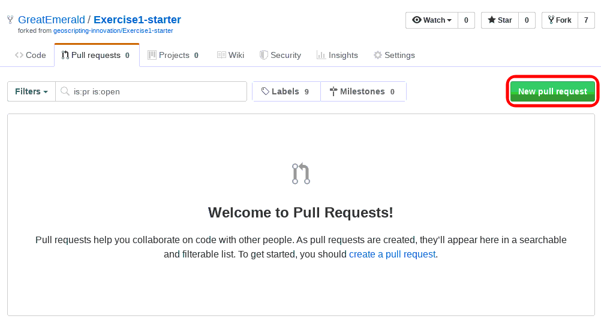

WUR Geoscripting 
Course setup
Important: The Geoscripting course is a Master-level course given in Wageningen University. This set of documents that you are reading provide the theoretical material from the course for use both in the course itself, as well as for people who are following (parts of) the course externally or are in general interested in the topics that we cover. As such, these documents aim to be generic for all of the user groups above.
If you are a student following the course at Wageningen University (WUR), please read the information on Brightspace. All course-specific information and exercises can be found there. Information on Brightspace overrule any information written in these pages, so please read it carefully and check it often. You will also find all the information on deliverables and exercises there.
Week 1, Lesson 1: Linux & version control
Introduction
Welcome to the Geoscripting course! Today we will get familiar with Linux, which is an advanced environment optimised for scripting, and with version control software that helps you collaborate with one another and keep track of your file versions. These tools are very important, as we will use them throughout the course for all course activities, and they will continue to be very useful after the end of the course for all your scripting work.
Throughout the whole course, we will be working in a Linux environment, and all of the material has only been tested on (and assumes) a Linux environment. Every WUR student gets access to one Linux virtual machine. To find information on how to access the virtual machine, see the course information on Brightspace.
Learning objectives
At the end of the lecture, you should be able to:
- Know what Linux is & what you can do with it
- Get comfortable working within a Linux environment
- Explain why software licenses are important and what software license options there are
- Apply a software license to your own code
- Use version control to develop, maintain, and share your code with others
- Submit an exercise using Git and GitHub
- Perform peer review using GitHub review functionality
Linux
Linux is a free and open-source operating system kernel. The kernel interacts with computer hardware and exposes its capabilities for your scripts! Together with a lot of small, handy programs, it forms an operating system called GNU/Linux. However, unlike e.g. Windows, there is not a single “GNU/Linux operating system”. Rather, there is a huge variety of Linux distributions. Each Linux distribution provides the same kernel, but different programs and environments, suitable for different use cases.
For example, one distribution that is very handy for geo-information science work is OSGeo-Live, which is an Ubuntu-based Linux distribution that has a wide range of free and open-source GIS and Remote sensing tools preinstalled. See this website for more information.
These tools are also available in other distributions, but they have to be installed manually. A general-use distribution such as Ubuntu itself, openSUSE or Fedora is more suitable for regular day-to-day tasks, since not having the unnecessary tools installed takes less space and makes it work faster. It is also easier to find help for them than for specialised distributions.
For the Geoscripting course, we have developed what is effectively our very own Linux distribution, with the use case of providing all of the tools necessary to finish the course. These tools are also very useful after the end of the course to continue data processing, for example for writing Master theses. Within our laboratory, we have several computers that are running this Geoscripting distribution, so that transferring over the work from one computer running it to another one would be as easy as possible, so you can continue working uninterrupted even after the end of the course. The Geoscripting distribution is nothing more than a set of scripts that install the necessary tools on top of what plain Ubuntu provides.
Why use a Linux distribution?
A Linux environment makes it much easier to install and combine a variety of open-source software, such as Python modules and GDAL, compared to other operating systems like Windows or macOS. In addition, open-source scientific software is often developed primarily for Linux (since that’s what most supercomputers and servers run!), and so it tends to be more stable and have more features on Linux. Lastly, Linux has a set of standards that allow programs to interoperate with each other, so that e.g. you can access GRASS GIS from R, QGIS from Python, GRASS GIS from QGIS, Python from R etc. All of this is managed and checked for quality so that you can always use the latest and greatest software without worrying about version mismatches and compatibility between software tools.
For the course, it also makes it possible to use the wide variety of tools that we will work with, all from a single supported environment. That way, we can be sure that the tools work the same way for all of the students, and that we also test the exercise submissions using the same versions of the tools to get the same output.
Getting started on Linux
During the course we will work in a Linux environment. For students taking the course in Wageningen University, we provide a VMware Horizon virtual desktop infrastructure (VDI) that is managed by the WUR IT department. It is available over the internet for each student in the course and supported by the IT department. The VMware Horizon VDIs can be accessed through the VMware Horizon client (preinstalled on WUR PCs).
See the tutorial on setting up VMWare Horizon on this page.
Notice: Make sure you read the page linked above and have no problems logging into and using the VDI. From here on out, we will try to work from within the VDI exclusively.
In case you can’t get the VDI running successfully (and only in that case, so hopefully you don’t need to do this!), there is one alternative: if you know what you are doing, you can install Linux on your own laptops or external hard disks. See a theoretical overview of running Linux on your own hardware and Linux system setup.
The VDIs are recommended. If you go for the alternative, the systems need to be set up manually and we do not have the time and manpower to support every student with this.
Once you have everything ready, login into your Linux VM, try out RStudio/RKWard, and also open QGIS. Explore the environment a little to get used to it.
Software licenses
One key advantage of Linux is that it is free and open-source software. While it is free as in free beer, that is, it can be used at no cost, more importantly it is free as in free speech: all of the source code of the kernel and the absolute majority of the applications is licensed under a free software license.
A software license is a legal text that describes how the software and its source code can be used by other people. Software licenses are grounded in the framework of copyright: the protection of authors’ intellectual rights. A free software license is a software license that gives others the freedom to run, copy, read, modify, and distribute changes to the original software and its source code. This is in addition to an open-source license, which makes the source code available and redistributable, but does not necessarily make the source code free. Both free an open-source licenses have their overseeing bodies: the Free Software Foundation for free software licenses, and the Open Source Initiative for open-source licenses. When a software fits both definitions (they often overlap), it is referred to as Free and Open-Source Software (FOSS), or les often as Free, Libre and Open-Source Software (FLOSS).
There are many advantages to FOSS. One advantage is that it fosters collaboration: one person implementing a feature makes it available for all of the users in the world. This enables such a massive effort required to create GNU/Linux distributions based on volunteer work, without needing to rely on commercial licensing, advertisements, donations or spyware to finance the work. It also allows anyone to remove such undesired parts of any software component, therefore ensuring higher quality of the software. Thus, while FOSS projects initially start weaker than proprietary (non-free or closed-source) software, in the long run the collaboration potential brings it on par and even overtaking the propriatary counterparts. See for example QGIS, which is FOSS, vs the proprietary ArcGIS.
A software license defines what others can do with your code, therefore before starting to write any code, it is vital to think about the license you would like to release your code under. This is because if you do not define any license, the default copyright terms apply: even if you publish the source code publicly, nobody is allowed to copy, redistribute or modify the code, in fact nobody is even allowed to read it! As an author, you are free to choose any license, both proprietary and FOSS licenses (or in fact no license altogether), but a proprietary license restricts the freedoms of others and therefore diminishes chances that others would want to collaborate with you to improve the code in the future. In addition, do not confuse a software license with commercial licensing, i.e. the requirement to activate a license subscription to use
There are two types of FOSS licenses: copyleft and permissive. A permissive license is one that allows copying, modifying and redistributing the code with no serious restrictions (usually with a restriction that the original author be credited for the work). A copyleft license adds a restriction that any modified versions that are distributed must be under the same (or equivalent) license. This restriction restricts others from restricting the terms of the software license in the future, therefore keeping the source code free forever. In other words, it’s following the philosophy that if we want to achieve the most freedom, we must restrict the freedom to restrict freedom!
Lastly, there is also an option to dedicate software to the public domain, which is not a license per se, but a waiver of copyright. Software in the public domain allows anyone to do anything with it without any restrictions, therefore it is radically permissive. There is no requirement to credit the original author, for example. Since some jurisdictions do not allow authors to waive copyright (including Germany, France and Italy), there are licenses such as CC0 that are aimed to make a work as free as possible by either dedicating it to the public domain, or if it is not possible, by giving it a permissive license.
How can you choose a software license in practice? There are multiple websites that give an overview of the most popular licenses that you can choose. Once you choose one, you need to follow the terms of the license about how to apply it. In most cases, it is sufficient to copy the terms of the license next to your source code and include it in your version control repository.
Question 1: If you wanted to contribute to a project that is licensed under the GNU General Public License v3 (copyleft), under which license(s) could you contribute? Which license would you choose in the end?
Version control
Have you ever worked on a project and ended up having so many versions of your work that you didn’t know which one was the latest, and what were the differences between the versions? Does the image below look familiar to you? Then you need to use version control (also called revision control). You will quickly understand that although it is designed primarily for big software development projects, being able to work with version control can be very helpful for scientists as well.

The video below explains some basic concepts of version control and what the benefits of using it are.
What is VCS? (Git-SCM) • Git Basics #1 from GitHub on Vimeo.
So to sum up, version control allows to keep track of:
- When you made changes to your files
- Why you made these changes
- What you changed
Additionally, version control:
- Facilitates collaboration with others
- Allows you to keep your code archived in a safe place (the cloud)
- Allows you to go back to previous version of your code
- Allows you to find out what changes broke your code
- Allows you to have experimental branches without breaking your code
- Allows you to keep different versions of your code without having to worry about file names and archiving organization
Question 2: Think of examples where you could use version control for things other than code.
The three most popular version control software are Git, Mercurial (abbreviated as hg) and Subversion (abbreviated as svn). Git is by far the most modern and popular one, so we will only use Git in this course.
Git 
What git does
Git keeps track of changes in a local repository you set up on your computer. Typically that is a folder that contains all your code and optionally the data your code needs in order to run. The local repository contains all your files, but also (in a hidden folder) all the changes to the files you have made. It does not keep track of all files automatically: you need to tell git which files to track and which not. Therefore a repository contains your current tracked files (workspace), an index of files that are being tracked, and the version history.
Every time you make significant changes to the files in your workspace, you have to add the changed files to the index, which selects the files whose changes you want to save, and commit them, which means saving the changes to the history tracking of your local repository.
Often you also setup a remote repository, stored on an online platform like GitHub, GitLab or others. It is simply a remotely-hosted mirror of your local repository and allows you to have your work stored in a safe place and accessible from your other computers and potential collaborators. Once in a while (at the end of the day, or every new commit if you want) you can push your commits, which means sending them to the remote repository so it keeps in sync with your local one. When you want to update your local repository based on the content of a remote repository, you have to pull the commits from the remote repository.
Summary of git semantics
- add: Tell git that you want a file or changes to be tracked. These files/changes are not yet saved in the repository! They are listed as “staged” in the index or staging area for the next commit.
- commit: Save the staged changes to your local repository. This is like putting a milestone or taking a snapshot of your project at that moment. A commit describes what has been changed, why and when. In the future you can always revert all tracked files to the state they were at when you created the commit.
- push: Send previous changes you committed to the local repository to the remote repository.
- pull: Update your local repository (and your workspace) with all new stuff from the remote repository. This command is simple, but potentially destructive, since it overwrites your files with the ones in the remote server. Hence it is not available in the Git GUI.
- fetch: Get information about the latest commits from the remote repository, but do not apply them to your local repository automatically. This is always safe as it does not change your workspace.
- merge: Merges two versions (branches) into one, applying the result to the workspace. This includes merging commits from the remote repository with the commits of the local repository. In effect, a fetch followed by a merge is the same as a pull, but it allows you more fine-grained control and is available through the Git GUI.
- clone : Copy the content of a remote repository locally for the first time.
- more advanced:
- branch : Create a branch (a parallel version of the code in the repository)
- checkout: load the status of a branch into your workspace

Setting up a Git project
Effective use of git includes two components: local software to manage the files on your computer (git client) and an online git hosting service to make them centrally accessible. While git is a single system, there is a variety of clients and a variety of hosts.
In this course, we will primarily use Git GUI as the client. It is a simple client that is included with Git itself, and is language-agnostic. There are more graphical clients as well, including one integrated into RStudio itself, but these clients are outside the scope of this course. Note that Git is language-agnostic, and we will be using it with both R and Python, so it’s best to learn the language-neutral GUI, rather than an R-specific GUI.
Protip: For those who are comfortable with working from the Linux terminal, the command line client is often the most efficient choice. Knowing how to use git from the command line is also useful when working on cloud virtual machines/servers for big data processing. So in protip boxes like this you will find command line equivalents to the GUI actions we will perform. Choose whichever way you find the most convenient for yourself.
In addition, while this tutorial describes how to use the built-in git-gui, you can also use the more modern git-cola, which may be more intuitive to you. The general steps are the same as in git-gui. You can find Git Cola in the applications menu (or else you may need to install it).
Throughout the Geoscripting course, for hosting our code, we will be using GitHub, the most popular Git hosting platform.
Let’s jump right into it! We will start by making our very own GitHub scripting project from scratch, and also try forking someone else’s project.
Client setup
- Launch Git GUI
Launch a program called Git GUI (e.g. from the Applications → Programming menu). Git GUI is a graphical interface to Git that comes with Git itself, and is thus cross-platform and always available. When launched, it looks something like this:

Note: External users should download git and install it to obtain Git GUI.
Protip: You can launch Git GUI from the terminal with git gui.
- Create an SSH key pair
In order for GitHub (and other services) to identify that the machine connecting to it is indeed owned by you, there are two options: using a password, or using an SSH key. SSH keys are much more secure than passwords, and it doesn’t require you to enter a password every time you try to communicate with the server. Therefore throughout the course we will use SSH keys.
You can generate a new SSH key pair in Git GUI by going to Help → Show SSH Key and pressing the Generate Key button. It will ask you for a passphrase. This is not a password and is completely optional: it is useful in the case your SSH key is stolen, for instance by a thief stealing your laptop or a virus; however, SSH keys are specific to each machine and are never sent over the network, so most of the time it is completely fine to leave the passphrase empty. If you keep it empty, you will not need to enter it every time you try to push your changes, yet the connection will be even more secure than when using a password.
Once done, you will see your new public key:

Protip: From the command line you generate a key pair by running ssh-keygen -t rsa -b 4096. In both cases, by default the public key is stored in the file ~/.ssh/id_rsa.pub (where ~ indicates the user’s home directory).
Account setup
Next, we will link our client with a Git host so that we can download and upload repositories.
- Log into GitHub
Go to GitHub and log in (register in case you don’t have an account yet).
- Enrol the public key to your user account
The SSH key pair is used to identify that you own the machine. On WUR Linux virtual desktop instances (VDIs) via MyWorkspace/VMware Horizon, the keys are stored on your personal VDI, so you can access them from anywhere.
Now you need to tell GitHub about your new key. To do that, copy the public key from the dialog, then in GitHub click on your avatar in the top right and go to Settings → SSH and GPG keys. Click New SSH Key, give it a title describing your machine, paste the public key in the box, and press Add SSH key. You might need to confirm the key by email for added security.
This only has to be done once (per machine/OS you use GitHub on).
Creating a new repository
- Create remote repository
Now we are ready to start making new repositories! In GitHub, press the “+” button at the top right and select New repository. Give it a descriptive name and a short description, choose the visibility of the repository and check Initialize this repository with a README.

Next, GitHub asks what software license you’d like to apply to your code, as we have discussed in the previous chapter. See Choose a License for a quick overview of what licenses are available. Make sure to choose a license, otherwise basic copyright applies to your code.
In addition, you can add a .gitignore file. This is useful to prevent Git from tracking files that you don’t want to keep track of, like temporary files or your R command history. The options are sorted by language, so you can select your language of choice, e.g. R.
- Configure repository settings
Explore your new blank repository a bit. On the tabs on the top, you can find that the repository can have issues and pull requests assigned to them. Issues is what is used to give feedback on code, so try and make a few issues and close them. It is useful to know how to use these, as for personal projects it can be used as a to-do list, and for others’ projects you can use it to report bugs or propose suggestions. You may be surprised how responsive developers can be to newly raised issues!

Next, check out the repository settings. Under the Collaborators tab of Settings, you can invite other people to collaborate on your repository. Go ahead and invite your team member to be a collabortor with full permissions.
- Get the URL of your new repository
Now that you have a remote repository, it’s time to create a local repository that links to it! Open the main page of your new repository, click the green Clone or download button at the top right of the page, and copy the Clone with SSH address of your new repository.

- Clone your repository
Go back to Git GUI, and press Clone Existing Repository. Paste the URL you just copied to the Source Location field, and choose a folder you want to store your code in in the Target Directory field. Note: the Target Directory must not already exist! Git GUI will create it for you.
Once you click Clone, you will get a question about whether you trust the remote machine (if you ran git gui from a command line, it will appear stuck, but actually the question will appear in the terminal and you need to answer it there). You need to answer this with yes (the full word). This puts the GitHub server into a list of trusted servers, to guard against potential impostor servers.
You will end up in an empty Git GUI window:

Protip: From the terminal, cd into the directory you want to clone into, and run git clone <url>, e.g. git clone git@git.wur.nl:you001/example.git. The repository will be cloned into a subdirectory with a matching name. This is much faster than using any GUI!
- Tell Git who you are
Before you start using Git, you should tell it what your name and email address is. You need to do that only once per Git installation. You should go to Edit → Options… and fill out the Global (All Repositories) options User Name and Email Address. These will be displayed on GitHub.
Protip: To set your user name and email from the command line:
git config --global user.name "Your Name"
git config --global user.email you@example.comWorking with Git GUI
- Make changes
To see Git in action, you need to make some changes in your repository. Try it by creating a new R script file in the directory where you cloned your new project.
Once you are done, go back to Git GUI. If you closed the window, you can get back to your repository by launching Git GUI and clicking on its path in the Open Recent Repository list. If you did not close it, click the Rescan button. You will see some changes:

Protip: To see a list of files with pending changes from the command line, use git status while in a git repository. To see what exactly changed in each of these files, use git diff.
At the top left corner, the Unstaged Changes panel, you can see all the files that changed in your workspace. If you click on the name of the file, the main panel will show you what changed since the last commit. Unless it is a non-text (data) file, in which case it will just note that something has changed. Note: Git is very efficient with storing changes in text files: these diff files are all it stores internally, it does not copy the whole file on each commit. However, it does not deal efficiently with non-text files, and thus you should limit the amount and size of such files as much as possible.
If you click on the icon of the file in the Unstaged Changes panel, the file changes will be staged and appear at the Staged Changes (Will Commit) panel. These are the file changes you want to save and sent to GitLab. You don’t have to stage all files for each commit, only those you actually want to be tracked by git. You can safely ignore some files such as manual backups, temporary files, and the like and they will remain untracked by git, as long as you never stage them. If you do want to stage everything, you can press the Stage Changed button. If you staged more than you wanted to, you can click on the file icon in the Staged Changes panel to unstage it.
Remember: clicking the name of the file shows the changes you made, clicking the icon of the file stages or unstages the change!
Protip: To stage a change from the command line, use git add path/to/file.ext where path/to/file.ext is the file you want to stage. To unstage, use git reset HEAD path/to/file.ext.
If you have files that you don’t want git to track, you can add them into the .gitignore file. It could be the name of a file, a directory, a wildcard (e.g. *.pdf), or any combination of these. To list several, put them on separate lines.
- Commit changes
Once you staged the files that you want to commit, you need to fill out the commit message. This is a brief description of what changes you made between the last commit and the one you are about to create. The first line you enter is the title of the commit, keep that one short. Subsequent lines are the description. You may notice that the Commit message box does not have a horizontal scrollbar: that is intentional, because your commit message should fit within that box without the need for scrolling. Use new lines to break the text.
If it is the first time you use Git GUI to make a commit, and you haven’t filled out your user name and email, it might complain about it not knowing who you are. In that case go back to step 9.
Next press the Commit button and your commit will be saved locally. A commit is like a saved state: you are always able to roll back the contents of your tracked files to the state they were in when you committed the changes.
Protip: To commit a change from the command line, use git commit. If you want to stage all tracked and changed files and commit, use git commit -a.
In the case you made a mistake (a mistake in the message, forgot to stage something, etc.), you can press the Amend Last Commit button and get right back to where you were when you made the last commit; but use this functionality very sparingly, as it does not work with changes that have already been pushed to GitHub.
Protip: To amend the last commit from the command line, use git commit --amend.
- Push changes to the server
Press the Push button, and confirm the push, to send all your changes to your GitHub repository. You can now refresh the GitHub page to see your changes. Well done!

Protip: To push changes from the command line, use git push.
- Pull changes from the server
One of the major uses of Git is collaboration and the ability to synchronise changes across different devices. Multiple users can do changes in the same Git repository (as long as you change the repository settings in GitHub to allow another user to do that), and you can work on the same code on different devices yourself. In both cases, it is important to keep all local repositories in sync with the remote repository. That is done via Git GUI by using Fetch and Merge. If you like, you can test it by cloning the same repository in another folder, making changes and pushing them to the server, then using fetch in the other copy.
If there are any changes on GitHub that are not on your local copy yet, in Git GUI go to Remote → Fetch from → origin to download all changes. This will not apply them yet, however.
To attempt to apply the changes, go to Merge → Local Merge…. If all goes well, the changes will be applied.
Protip: To do a fetch and merge together the command line, use git pull.
There may be cases where files go out of sync in incompatible ways, however, like two people editing one file at the same time. In that case you may hit a merge conflict. It is best to try to avoid them. In case it happens, you need to go through the conflicting files in a text editor and edit them by hand, keeping the parts of the files you need. The conflicting parts will be in between lines of of >>>> and <<<< symbols. Once you remove the parts you don’t need (including the separators), you can solve the conflict by committing the changes.
Forks and pull requests
Now we know how to work with Git and GitHub for our personal work, and how to collaborate on a project with your team member. But what if you want to contribute code to someone else who has not given you access rights, or what if you want to review the code before it’s accepted to your repository? That’s where forking and pull requests come in handy (respectively)!
A fork is your own personal copy of someone else’s repository. GitHub allows you to fork any public repository. You want to make forks whenever you want to edit code but do not have direct commit rights.
Protip: In fact, if you click the edit button on a file on GitHub and do changes to a repository that you don’t have the rights to write into, GitHub will helpfully make a fork for you, followed by a proposal to make a pull request for your changes.
- Fork a repository
Go to your team member’s repository that they created by following the steps above, and then click the Fork button at the top right. (If you can’t find it, alternatively you can go to some other repository, e.g. the first exercise, and fork it). You will find a new repository under your profile, with the same name as the original.

- Make changes, commit and push
After you have your own fork, it is the same as having your own personal repository with the code from the original (upstream) repository in it. Clone it locally, make some changes, commit them and push them back to GitHub, as per steps 7-10. You should see that your changes take effect in your own downsteam fork, but not in the upstream repository.
- Make a pull request
If you are ready to ask the upstream developers to incorporate your code into their repository, go to the Pull Requests tab and press the green New pull request button.

This will show you all the changes you have made, and if that is what you want to propose for the upstream developers to incorporate, click on the Create pull request button, upon which you can give the name for your pull request (changeset) and a description as to why the upstream developers would want to incorporate your code. After you confirm by clicking Create pull request again, the pull request will be visible in the pull requests tab of the upstream repository:

Then it’s up to the upstream developers to perform a code review and either accept or reject the pull request in the end.
Protip: For code review, GitHub also has special tools. If you look at the Files changed tab of a pull request, you will see that you can press a “+” button next to any line of code and write a comment about it. Once finished, there is a “Review changes” button at the top left that allows you to enter the final verdict and an overall comment.
Other Git GUI functionality
You might run into a situation when you have made changes in tracked files, but do not want to keep some of the changes. You can revert one file by selecting it in Git GUI, then clicking Commit → Revert changes.
Protip: The command line equivalent is git checkout -- path/to/file.ext, or if you want to reset all changed files, git reset --hard.
Git GUI not only provides a way to make, push and pull commits, but also to visualise the commit history of your repository in a tree graph. Go to Repository → Visualise Master’s History to see it. For larger and more complex projects with lots of contributors and merges, it might look like some sort of a subway map:

Protip: The command line equivalent is git log.
The history view also allows you to reset the state of the repository to any previous commit by using the context menu. Note, however, that you can only push if you are on the latest commit. So the easiest way to revert changes is to copy over the files to a temporary directory outside of git, reset back, and move the files back into your repository.
Protip: A few more options are available from the command line. git revert <commit> will undo changes from a given commit, where <commit> is the commit ID (you can get commit IDs from git log, they look like a long string of letters and numbers). git checkout <commit> -- path/to/file.ext will reset a single file to the state it was at the given commit.
You can also browse the history of a repository from your Git hosting service, and GitHub/GitLab even allow editing files from a web interface.
Question 3: How do you find commit history and old versions of your files on GitHub/GitLab?
That’s it: now you know how to keep track of all your files, so you will never lose them again, and no longer have to worry about making backups or saving multiple versions. In addition, this is the way that free and open-source code development happens in actuality. Also, the exercises and assignments in the course will be delivered and submitted this way, so make sure you are familiar with the whole process!
References
- Great 15 min interactive git commands tutorial: try.github.io
- Hadley Wickham on Rstudio and git
- R Studio documentation on version control: Using Version Control with RStudio
- Video tutorial to use revision control with R Studio and GitHub/BitBucket Youtube link
- Advanced Git: A successful git branching model